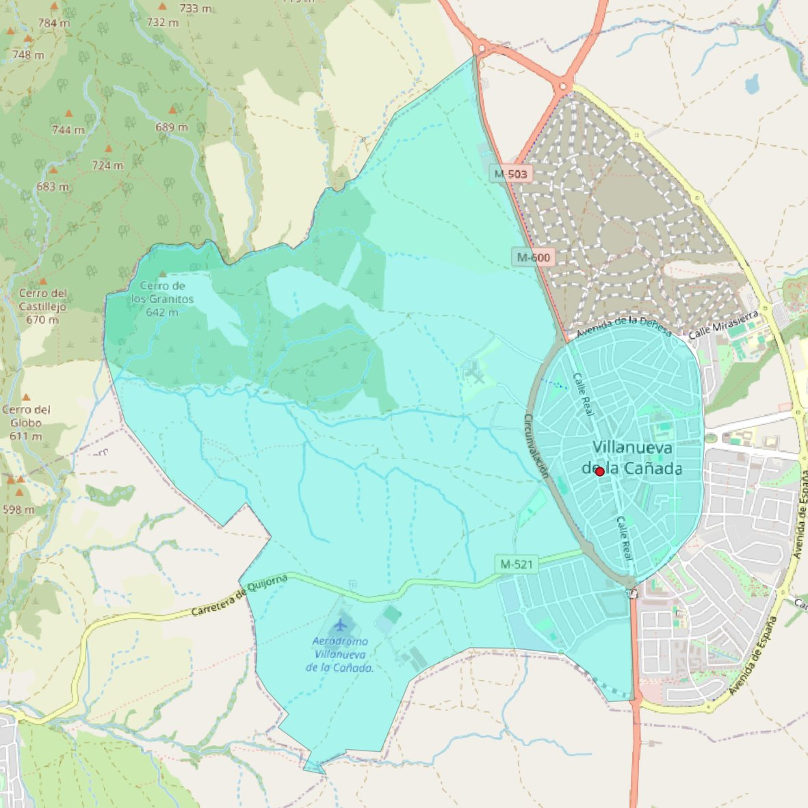

Villanueva de la Cañada · Arciprestazgo de Villaviciosa de Odón · Diócesis de Getafe

De cada 100 habitantes, 19 tienen menos de 18 años, 15 tienen 65 o más y 30 han nacido en otro país.
| Parroquia | Arciprestazgo | Diócesis | |
|---|---|---|---|
| Habitantes (2025) | 7.800 | 135.446 | 1.729.840 |
| Habitantes por km² | 796 | 601 | 751 |
| Edad media (2024) | 39,8 años | 39,9 años | 42,3 años |
| Menores de 18 (2024) | 19,1 % | 20,9 % | 18,2 % |
| 65 o más (2025) | 15,3 % | 14,8 % | 18,4 % |
| Índice de envejecimiento (2025) | 103 | 92 | 127 |
| Nacidos en otro país (2025) | 29,7 % | 18,9 % | 20,3 % |
| Renta por persona (2024) | 18.600 € | 24.800 € | 16.000 € |
| Personas por hogar (2024) | 3,10 | 3,16 | 2,80 |
| Hogares de una persona (2024) | 21,0 % | 16,0 % | 21,0 % |
| Estudios superiores (2024) | 46,7 % | 55,2 % | 32,4 % |
| Paro (2024) | 7,1 % | 5,3 % | 9,1 % |
No hay en esta web ningún desarrollo urbanístico previsto en el territorio de la parroquia.